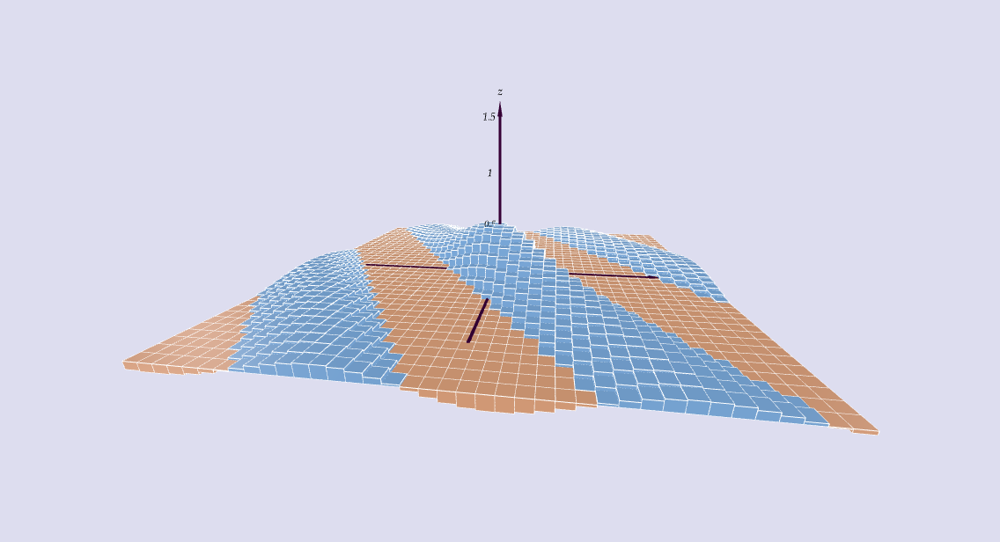

Drew Youngren dcy2@columbia.edu
A continuous function on a closed and bounded set $D$ must achieve its absolute minimum and maximum.
\[\int_a^b f(x)\,dx = \lim_{N\to \infty} \sum_{i=1}^{N} f(x_i^*)\,\Delta x \] where $x_i^*$ is a sample point in the $i$th interval and $\Delta x = \frac{b - a}{N}$.
A double integral over a region $\mathcal R \subset \RR^2$ of a scalar field $f(x,y)$ is a limit of Riemann sums \[\iint\limits_{\mathcal R} f\,dA = \lim\limits_{M,N \to \infty} \sum_{i = 1}^M \sum_{j=1}^N f(x_{ij}^*, y_{ij}^*)\,\Delta A_{ij} \] where $(x_{ij}^*, y_{ij}^*)$ is a sample point in, and $ \Delta A_{ij}$ the area of, the $(i,j)$th subrectangle inside $\mathcal R$.
Graphically, this is the signed volume under the graph of the function.
Over a rectangle $[a,b]\times [c,d] \subset \RR^2$, we define the iterated integral \[ \int_a^b \int_c^d f(x,y)\,dy\,dx = \int_a^b \left(\int_c^d f(x,y)\,dy\right)\,dx\]
If $f$ is continuous on rectangle $\mathcal R = [a,b]\times [c,d]$, then \[ \iint\limits_{\mathcal R} f\,dA =\int_a^b \int_c^d f(x,y)\,dy\,dx = \int_c^d \int_a^b f(x,y)\,dx\,dy. \]
Let $\mathcal{R} = [0,\pi]\times[0,2\pi]$. Evaluate \[\iint_\mathcal{R} x \cos(xy)\,dA\] as an iterated integral.
A region in $\RR^2$ that is bounded by graphs of functions (of one variable) can be integrated over as interated integrals.
Suppose $\mathcal{D} = \{(x,y) \mid g(x) \leq y \leq h(x) \}$. Then
\[\iint_\mathcal{R} f(x,y) \,dA = \int_a^b \int_{g(x)}^{h(x)} f(x,y)\,dy\,dx\]
Let $\mathcal D$ be the region bounded by the curves $y = \frac{x^3}{32}$ and $y = \sqrt{x}$. Write $\iint\limits_{\mathcal D} f\,dA$ as an iterated integral.
\[ \int_0^4 \int_{x^3/32}^{\sqrt{x}} f(x,y) \,dy\,dx \]
\[= \int_0^2 \int_{y^2}^{\sqrt[3]{32 y}} f(x,y) \,dx\,dy \]
Find the volume of the
solid region
under the plane
$x-2y+z=10$ and above the region bounded by
$x+y=1$ and
$x^2+y=1$.
Solution. \[ \int_{0}^1 \int_{1-x}^{1 - x^2} (10 - x + 2y)\,dy\,dx \] \[ = \frac{107}{60} \]
Integrating in three dimensions presents no theoretical challenge. \[\iiint_E f(x,y,z)\,dV = \]\[\lim_{M,N,P\to\infty} \sum_{i=1}^M\sum_{j=1}^N\sum_{k=1}^P f(x_{ijk}^*,y_{ijk}^*,z_{ijk}^*)\,\Delta V_{ijk}\]
Fubini's Theorem applies directly to this case; thus, we can compute using (3) iterated integrals. \[ \iiint_E f(x,y,z)\,dV = \]\[ \int_a^b \int_{g(x)}^{h(x)} \int_{j(x,y)}^{k(x,y)} f(x,y,z)\,dz\,dy\,dx \]
Set up an iterated integral to find the volume of the solid region $S$ in the first octant with \[x^2 + y^2 \leq z \leq 4.\]
Solution \[ \operatorname{Vol}(S) = \iiint\limits_S 1\, dV = \int_0^2 \int_0^{\sqrt{4 - x^2}} \int_{x^2 + y^2}^4 \,dz\,dy\,dx = 2\pi \]
Suppose a point $(x,y,z)$ is selected randomly from $S$ above. What is the probability that $x > 1$?
Solution
Simply find the proportion of the region (by volume) that has the property $x > 1$.
\[ P(x > 1) = \frac{\int_1^2 \int_0^{\sqrt{4 - x^2}} \int_{x^2 + y^2}^4 \,dz\,dy\,dx}{\operatorname{Vol}(S)} \approx 0.253 \]